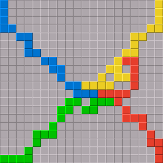

There are four players, Blue, Yellow, Red and Green, and a board consisting of 20×20 squares.
Each player has a set of 21 pieces of his color shaped like the polyominoes up to size five. (A polyomino is a figure built by a number of squares connected along the edges.)
The players alternate in placing one of their pieces on the board. Blue starts, followed by Yellow, then Red, then Green.
Each player has a starting square. Blue's starting square is in the top left corner, Yellow's in the top right corner, Red's in the bottom right corner, and Green's in the bottom left corner. The first piece of a player must cover its starting square.
The following pieces must be placed on empty squares such that the new piece touches at least one piece of its own color corner by corner but does not touch a piece of its own color along the edges. The new piece may touch edges of pieces of the opponent colors.

When the player of a color cannot place any more pieces, the player passes and the next color continues.
When no player can place any more pieces, the player with the highest score wins. The score of a color is the number of squares on the board occupied by the color, plus a bonus of 15 points if the color could place all of its pieces, plus an additional bonus of 5 points if the color could place all pieces and the last piece played was the one-square piece.
The game can be played with two players. The first player plays both Blue and Red, the second player Yellow and Green. The points of both colors that a player plays are added.
Note that the original Blokus Classic rules use colorless starting points. This means that each color may freely choose which of the remaining unoccupied starting points to use for its first move. Pentobi currently only supports the rule variant with colored starting points because this rule variant is used on the Blokus online server at blokus.com and also was used in most of the past Blokus tournaments.